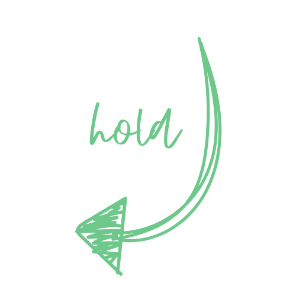

Hi! I'm Nitish Singla.
I am an undergrad at Cluster Innovation Centre, University of Delhi, studying Information Technology and Mathematical Innovation. Right now, I am working as a research intern at Translational AI Center at Iowa State University.

Experience
- Research Intern at Translational AI Center, Iowa State University (June 2024 - Present, Ames, USA)
- Research Intern at CyPSi Laboratory, IIC (February 2024 - November 2024, Delhi, India)
- Python Intern at AgentStat (Now Dream Potential) (September 2023 - January 2024, Seattle, USA)
- Content Writing Intern at Writee (Acquired) (March 2023 - May 2023, India)
Publications
-
"Reservoir Computing
Approach
for Enhanced Image Security Based on Fractional Order Chaotic Financial
System"
Submitted to Multimedia Tools and Applications, September 2025 -
"In-Context Adaptation of
VLMs
for Few-Shot Cell Detection in Optical Microscopy"
Submitted to IEEE Transactions on Biomedical Engineering, November 2025